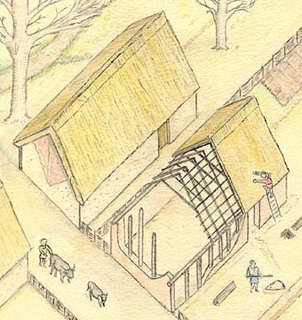
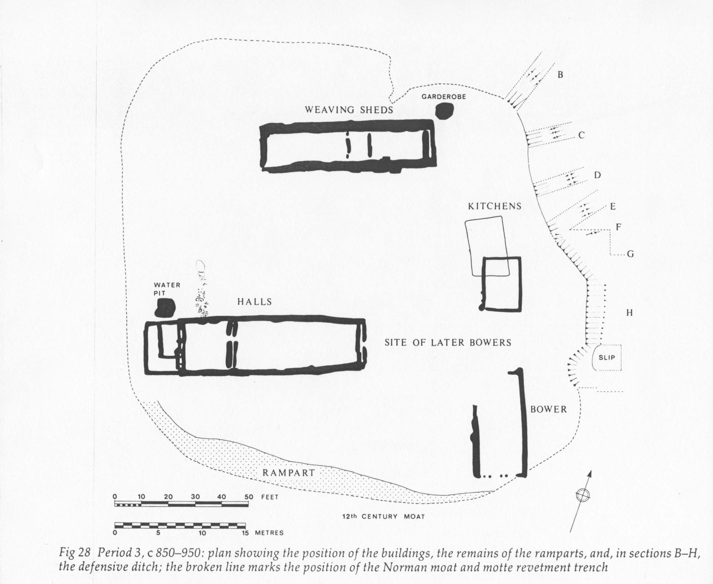
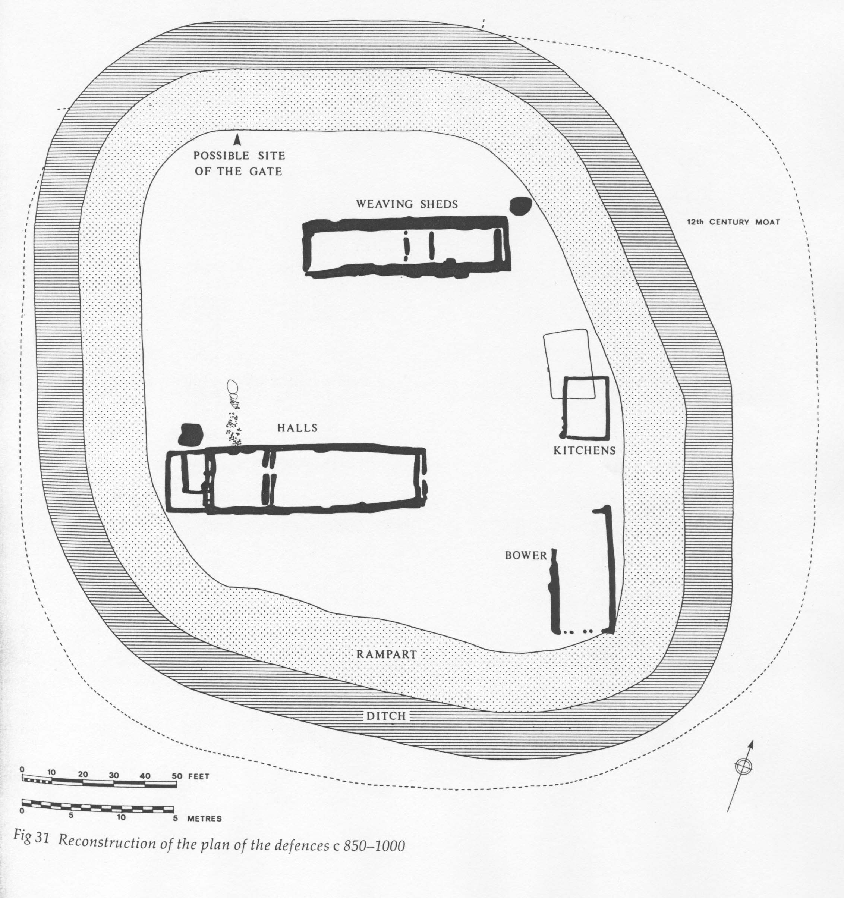
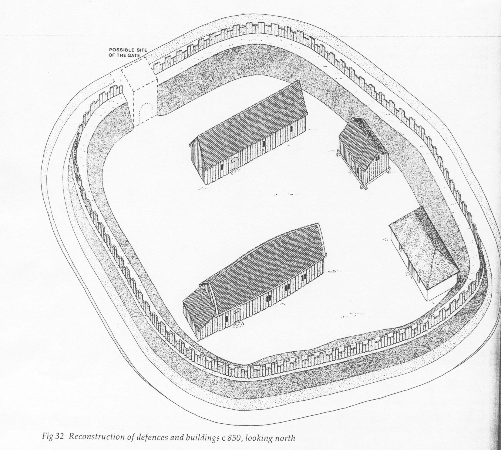
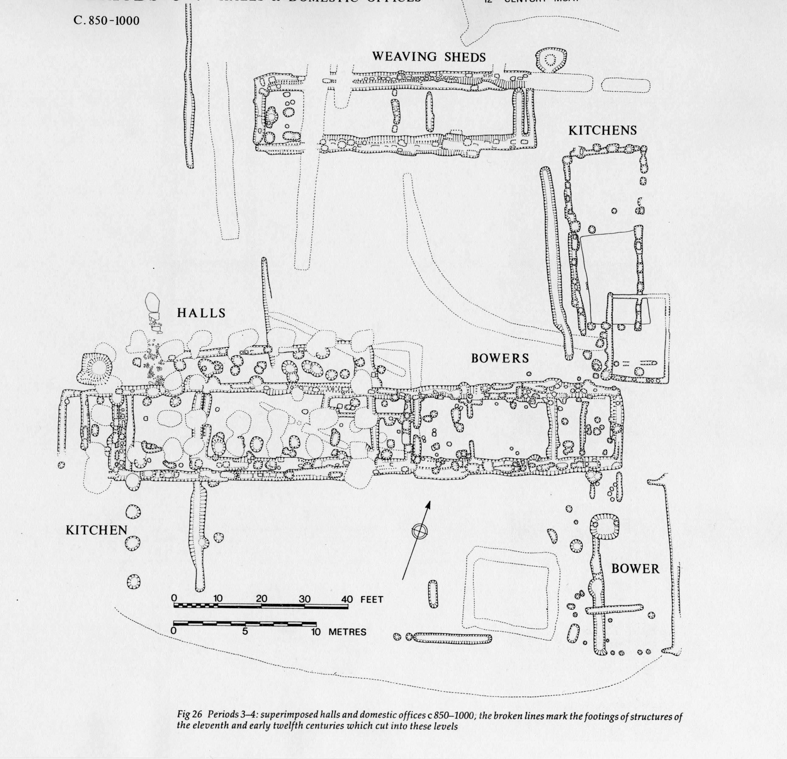
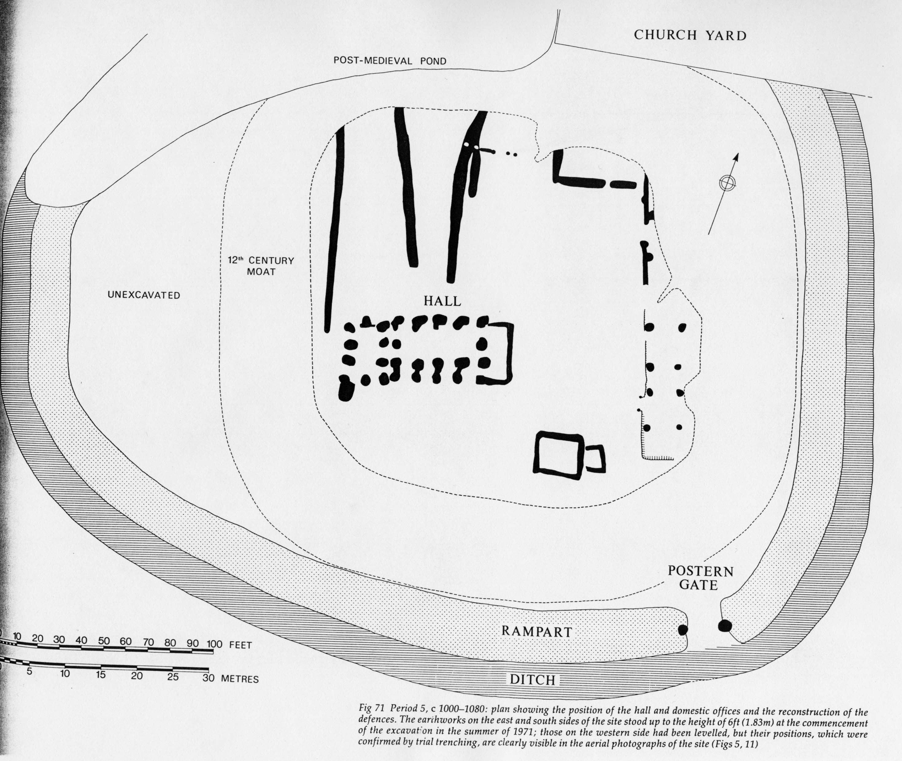

Croft A, Anglo-Saxon and late 11th-century houses |
The first house (1, below and left) was about 29 x 13 ft. It was replaced by a second house (2) of the same size, built in the early-1000's.  Reconstruction drawing of House 1/2 |

The Manor House
Period 3, c. 850-950 Around 850, the status of Goltho seems to have undergone a change. A large Anglo-Saxon hall, with associated outbuildings enclosed by fortifications was built, indicating that it was the home of a family of some importance. This was a part of England that was settled by Vikings, and it is possible that the manor was occupied by Scandinavians, but there was no evidence that the village had been sacked before the manor was built, and the artifacts and house styles are not particularly Scandinavian. In any case, the increase in defensive structures around the manor is probably related to the political instability of the period. The manor was surrounded by a ditch and rampart (bank of dirt topped by a fence), enclosing an area of about 160 x 160 ft. The ditch was 7-8 ft. deep, and about 18 ft. wide. The buildings within the enclosure consisted of a long hall, a bower (bedroom), weaving sheds, a kitchen, and a garderobe (latrine), all built of timber. The hall (about 80 x 20 ft.) was subdivided into different rooms, and would have been used for holding court, feasting, and other public functions. The bower was the accomodations for the members of the family. The long building known as the weaving shed was identified by the finding of numerous items related to weaving. The kitchen contained a baking oven, and remains of cooking pots, which helped to identify it.
 |
  |
Period 4, c. 950-1000 The layout of the site did not change during this period, although the buildings were rebuilt in different ways. The hall was rebuilt, the new one being first 42 x 22 ft, then 42 x 29 ft. The new hall contained wooden columns inside it, dividing it into a nave and aisle. It is not clear why the hall should have been rebuilt in this way, unless it was perhaps a prestigious way to build a hall. To the west of the hall, much more substantial and larger bowers were built to house the family, with an attached garderobe (latrine). |
 |
Period 5, c. 1000-1080 Around 1000, the entire manor was rebuilt. The same set of buildings were included, but they surrounded a larger courtyard, and the enclosure was levelled and replaced by one that enclosed a larger area. The new hall, built on the site of the earlier ones, measured 38 x 24 ft., with a nave and aisle like the previous ones. The bower was again a continuation of the hall, again with an attached garderobe |
 |